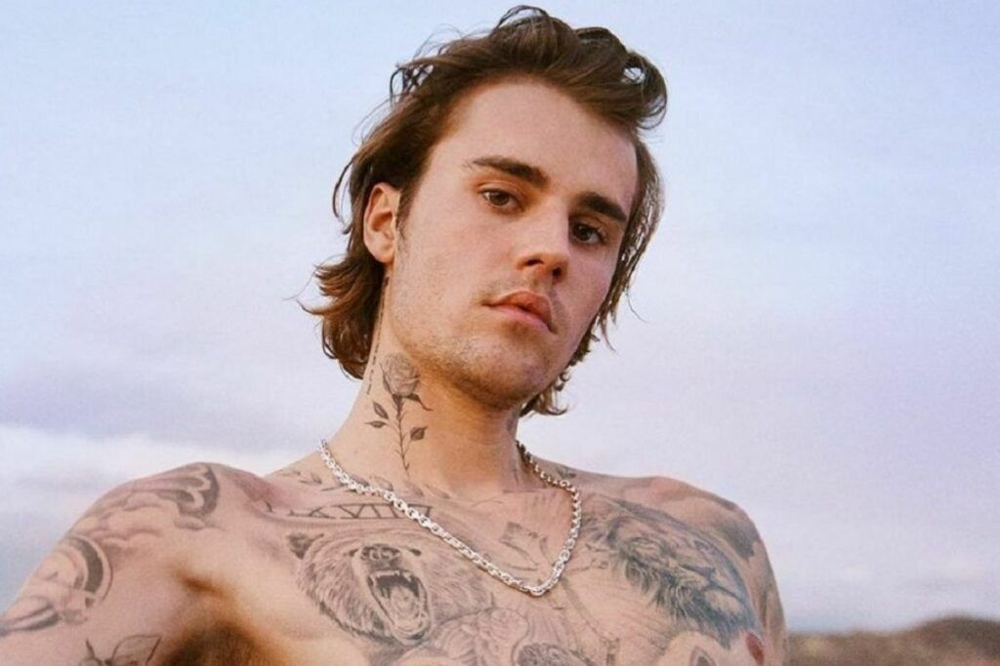

JUSTIN BIEBER
O cantor canadense surgiu na mídia em 2007 através de vídeos no Youtube, cantando diversos covers que obtiveram milhões de visualizações e chegaram a Scooter Braun que se tornou seu agente e levou Justin para Atlanta para reunirem-se com o cantor Usher. Assim em 2009 assinou contrato com Island Records dando inicio a sua carreira musical oficialmente. Seu álbum de estreia foi lançado em 2009 recebeu aplausos da critica e estreou na sexta posição na parada da Billboard. A segunda parte de seu primeiro álbum, My world 2.0, contam com uns dos maiores hits da carreira do cantor como “Baby” em parceria com o rapper Ludacris e outros sucessos como “Somebody to love” e “U Smile”. Bieber lançou seu segundo álbum de studio em 2011, intitulado de Under the Mistletoe. O disco vendeu 225 000 cópias em sua semana de lançamento e estreou na primeira posição na Billboard 200. O terceiro álbum de studio, Believe, foi lançado três meses depois, estreou na primeira posição em mais de quinze países. JustinBieber foi nomeado como a estrela mais quente pela revista J-14, revelação do ano pela MuchMusic além de ser conhecido por ter criado tendências na moda jovem, fazendo com que adolescentes de todo o mundo imitassem seu corte de cabelo e o seu estilo de vestir. Venceu vinte prêmios Billboard Music Awards, quinze American Music Awards, dois Brit Awards, , três MTV Video Music Awards e já foi indicado a dois prêmios Grammy Awards vencendo um. O cantor continua fazendo muito sucesso e tem hits recentes como “Ghost” e “Hold On” lançados este ano e colaborações com Daniel Caesar e Giveon em “Peaches” e diversos outros artistas entre eles, Tori kelly e DaBaby.